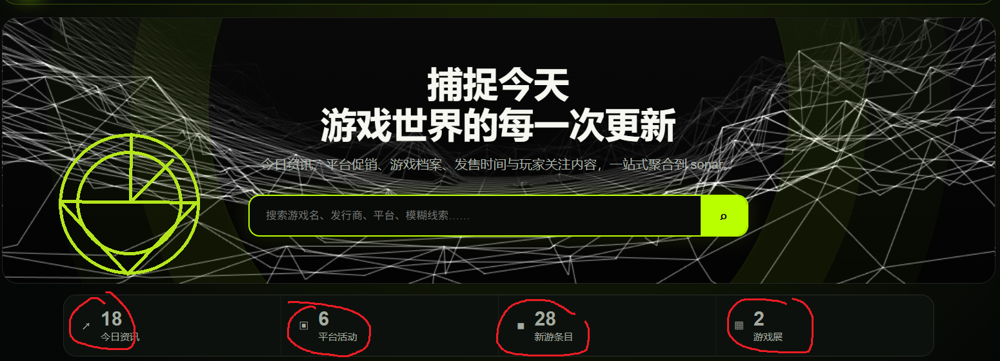
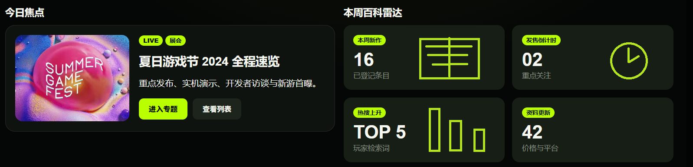
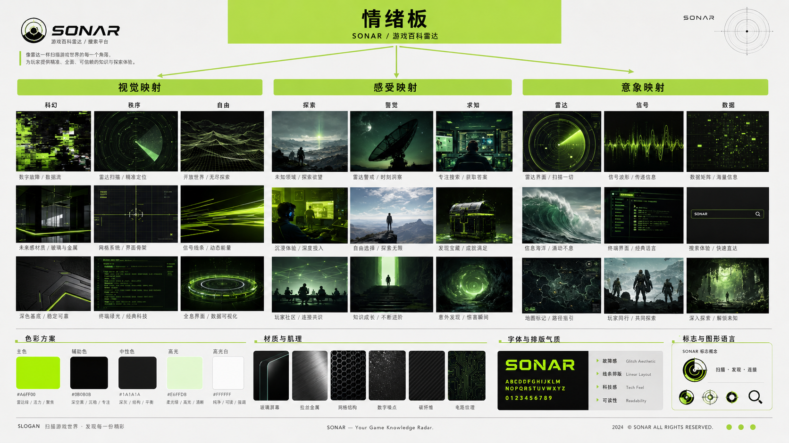

资讯、折扣、评分和游戏档案分散，用户需要在多个页面之间反复确认。
Responsive Web Design / 2026
SONARGame Radar
把游戏资讯、检索与百科信息组织成一套“雷达扫描”体验。用户不是被动阅读列表，而是在高密度信息海域中定位下一款值得关注的作品。
打开可交互原型 ↗
01 / Project Brief
让信息成为可探索的海域
项目针对游戏爱好者面对资讯分散、筛选条件复杂、跨设备体验不连续的问题，整合实时内容、模糊搜索、筛选与游戏资料库。设计目标不是堆叠更多卡片，而是让高密度内容仍然具有方向感。
以雷达作为核心隐喻，用扫描、坐标、信号强度建立统一的交互语言。
桌面、平板、移动端入口，以及首页、搜索、资料库和详情页面。
02 / Design Logic
雷达不只是装饰
酸性绿色承担定位与操作反馈，青蓝色标记系统信息，深黑背景降低长时间浏览的视觉负担。网格、编号与细线把页面变成一块正在工作的监测面板。
扫描式首页
首屏以大型雷达与动态资讯构成视觉锚点，热点游戏像信号一样被捕获；侧栏保留新闻与趋势，形成“发现”和“确认”的双通道。
可解释的检索
搜索结果同时呈现平台、价格、类型和时间信息，筛选器始终可见，让用户理解结果为何出现，也能快速收窄范围。
模块化百科
游戏详情拆分为概览、媒体、配置、评分与关联内容。统一卡片尺度降低学习成本，强层级标题保障扫读效率。
跨端连续性
桌面端突出并行浏览，平板端重排侧栏，移动端保留核心扫描、搜索与卡片信息，触控目标和安全区域同步调整。
SIGNAL
#B7FF00
#B7FF00
DATA
#20D9FF
#20D9FF
PANEL
#071216
#071216
TEXT
#E8F3F5
#E8F3F5
03 / User Flow
从信号到完整档案
页面结构围绕“发现、缩小范围、验证信息、保存目标”展开，使视觉叙事与任务路径保持同一方向。
首页捕捉实时热点与推荐信号。
通过关键词与复合条件缩小范围。
进入资料库阅读结构化游戏档案。
跨设备继续浏览、比较与收藏。
04 / Interface Gallery
高密度，也要有呼吸
主画面以大尺度占据注意力，次级截图轻微错位并越出网格，像不同深度的声呐回波。悬浮与倾斜只用来建立层次，不干扰阅读。




设计反思：SONAR 最重要的收获，是把视觉隐喻转化成可重复使用的信息规则。后续可继续加入真实数据接口、筛选状态持久化与可访问性测试，让“雷达”从风格语言进一步成为可靠的工具体验。
Continue Diving